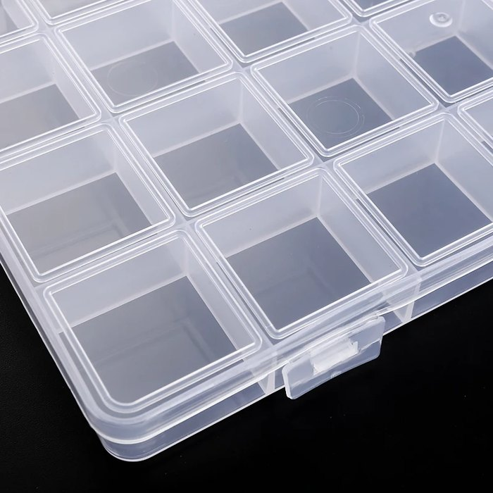

NICHT FREIGEGEBENER PRODUKTENTWURF
Keine eBay-Veröffentlichung. Fehlende Dokumente und Prüfpunkte bleiben offen. Versand und Gewinn sind nur Kalkulationswerte, keine Checkout-/Gewinnbestätigung.
AliExpress: 1005006830218955

HOCHWERTIGES MATERIAL Hergestellt aus transparentem und umweltfreundlichem PP-Kunststoff, hochwertig, stark und langlebig.Unsere Produkte wurden streng geprüft.Damit Sie ein hochwertiges Einkaufserlebnis genießen können ANDERE GRÖSSEN Sie können zwischen mehr als 7 Aufbewahrungsboxenstilen wählen. Verschiedene Größen können Ihren unterschiedlichen Anforderungen gerecht werden. EINFACH ZU VERWENDEN Einfach zu lagern und zu verwalten. Kleine Accessoires, Ohrringe, Ringe, Halsketten, Schnüre, Perlen; Haken, Köder; Alphabetbrett-Alphabet, DIY-Bastelarbeiten, Nägel, Muttern und Schrauben usw. VERSCHIEDENE ANWENDUNGEN Sehr gut geeignet zur Aufbewahrung von Diamanten, Samen, Perlen, Nagel-Strasssteinen, Pillen, Ohrsteckern, Ringen und anderen kleinen Gegenständen. Verpackungsschritt
| Innenmaterial | Kunststoff |
|---|---|
| Ursprung | CN (Herkunft) |
| CN | Zhejiang |
| Material | Kunststoff |
| Artikellänge | 0 |
| Artikeltyp | Schmuckverpackung und -präsentation |
| Artikelbreite | 0 |
| Form | POLYGON |
| Art der Schmuckverwendung | Perlen und Charms |
| Artikelhöhe | 0 |
| Verschlussart | Flip-Top |
| Menge | Andere |
| Artikelbreite | 0 |
| Artikelgewicht | 100g |
| Artikeldurchmesser | 0 |
| Produkteigenschaften | tragbar |
| Anlass | Inländisch |
| Montageart | Andere |
| Typ der Schmuckverpackung und -präsentation | Etuis und Displays |
| Choice | yes |
| SKU | Quelloptionen | Bestand | Quellpreis EUR | Versandprognose EUR | Verkaufspreisprognose EUR |
|---|---|---|---|---|---|
| 12000038442505194 | {"Farbe": "12 Grids"} | 121 | 1.99 | 1.99 | 22.99 |
| 12000038442505195 | {"Farbe": "15 Grids"} | 100 | 2.65 | 1.99 | 23.99 |
| 12000038442505192 | {"Farbe": "28 Grids"} | 210 | 1.55 | 1.99 | 21.99 |
| 12000038442505193 | {"Farbe": "9 Grids"} | 50 | 1.99 | 1.99 | 22.99 |
| 12000038442505190 | {"Farbe": "20 Grids"} | 57 | 2.95 | 1.99 | 23.99 |
| 12000038442505191 | {"Farbe": "24 Grids"} | 76 | 2.79 | 1.99 | 23.99 |
| 12000038442505189 | {"Farbe": "18 Grids"} | 13 | 3.05 | 1.99 | 23.99 |
Breite, Höhe, Länge